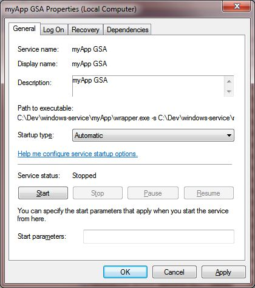

Kafka Sink Connector
The Kafka connector allows GigaSpaces processing Units to communicate with Kafka-enabled data services.
Prerequisites
- Installation of Kafka and Kafka Connect
- Installation of Insightedge v15.2
- Git, Maven and JDK 8
Summary of Installation Steps
- GSA process should survive a user logoff.
- GSA command windows should be hidden so that they are not closed accidentally by users.
- GSA process should restart automatically after a machine restart and all GigaSpaces infrastructure should be available without user/administrator intervention.
psexec
If your requirement is only item 1 and/or 2 above, you can use psexec (SysInternals/Microsoft tool, http://technet.microsoft.com/en-us/sysinternals/bb897553). When you start the GSA using psexec from a remote machine in the network the process does not open command windows and does not get terminated on a logoff of the user.
Windows Service
If you need to fulfill all 3 reasons above, then you have to create a windows service for GSA.
Easiest way to convert GSA into service is to use the .NET version of the product and create windows service using the instructions that are documented in the installation documentation.
Some users are not comfortable using the .NET version of the product and want to use only Java version of the product. In such cases, there are many software that can help in converting a Java Application (like GigaSpaces) to a Windows Service.
Example
An example GSA windows service configuration created using Java Service Wrapper can be downloaded from here. It was created using the instructions on Tanuki software website.
-
Modify the wrapper.config file per your environment. For downloading wrapper.jar go to Java Service Wrapper, download wrapper-windows-xxx-xx-x.x.xx-pro.zip which fits to your platform, unzip it and copy wrapper-windows-xxx-xx-x.x.xx-pro\lib\wrapper.jar to your myApp\lib dir (or to any dir on your file system and point to it in your classpath)
-
Set the values for all the environment variables (look for set.xxx) per your environment.
-
This example starts 2 GSC's, GSM and a LUS. Modify these settings as needed.
-
Also modify Additional Java parameters (look for wrapper.java.additional.xxx) defined in the wrapper.config file.
-
Install the service using the included InstallGSAService-NT.bat script.
-
After the install you should be able to see the service in the Windows Services applet.

-
Service is installed with Startup Type of "Manual". Change it to "Automatic" to start the service automatically after every restart.

-
Use the UninstallGSAService-NT.bat script to uninstall the service.
Other Information
- It is recommended that the
deploy command be run manually instead of defining this as a windows service.
- Typically, GigaSpaces cluster spans multiple machines and redundant instances of GSM's and LUS's run on different machines. If a machine is restarted, deployment will still be intact and be managed by available redundant GSM that is running on other machine. Once the machine and GSC's are restarted missing PU instances are deployed by GSM into these newly started GSC's as needed.
- To convert other individual components (GSC, GSM or LUS) into windows service, same instructions can be used with simple modifications.